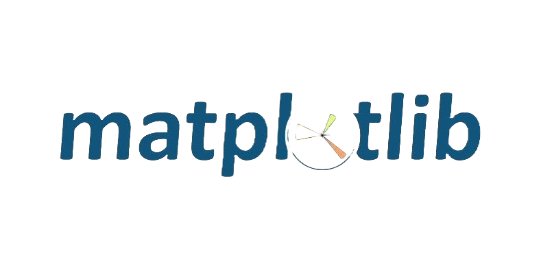
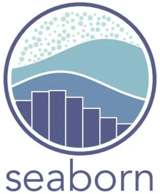
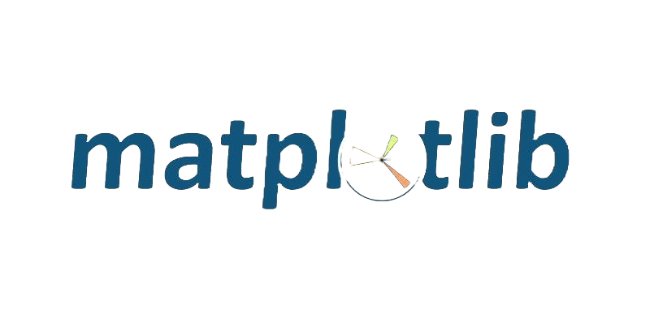
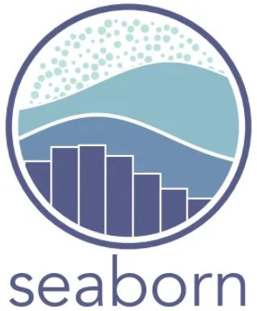

Bibliotecas Python para Análise de Dados
Numpy: É uma biblioteca poderosa para cálculo numérico e manipulação de arrays multidimensionais, permitindo realizar operações matemáticas eficientes.
Pandas: Facilita o trabalho com estruturas de dados, como DataFrames, ideal para manipulação de dados tabulares e séries temporais.
Matplotlib: Uma biblioteca de visualização que permite criar gráficos estáticos, animados e interativos em Python.
Seaborn: Construída sobre o Matplotlib, oferece uma interface mais simples para criar gráficos estatísticos informativos e atrativos.
Scipy: Voltada para cálculos científicos e estatísticos, incluindo previsões, como valores futuros de imóveis com base em dados históricos.

 


